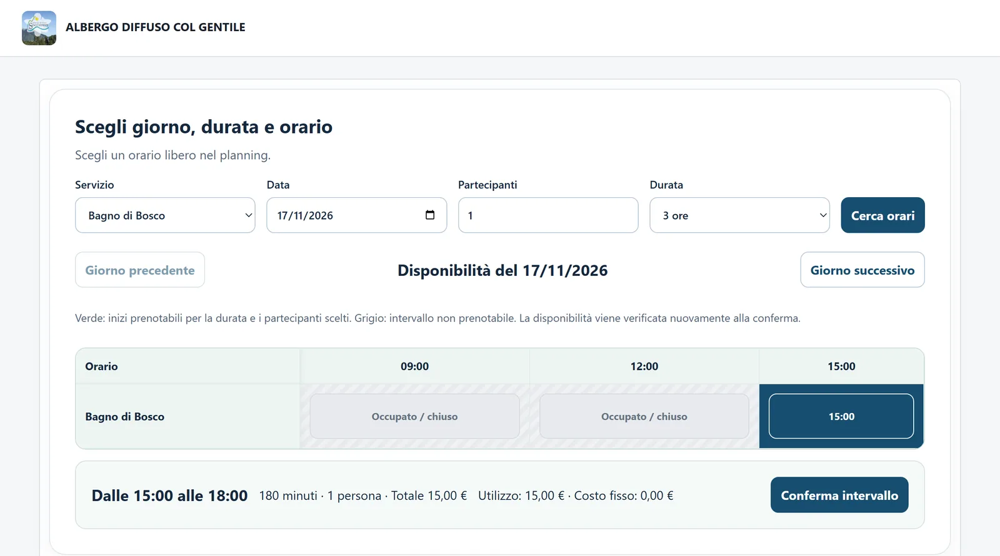
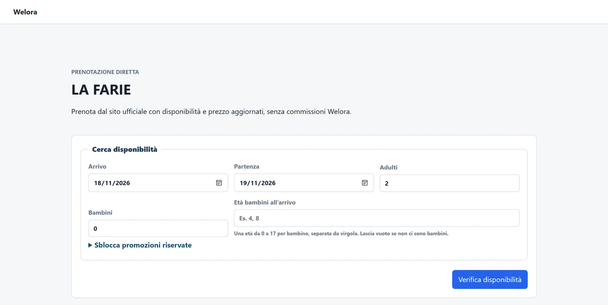
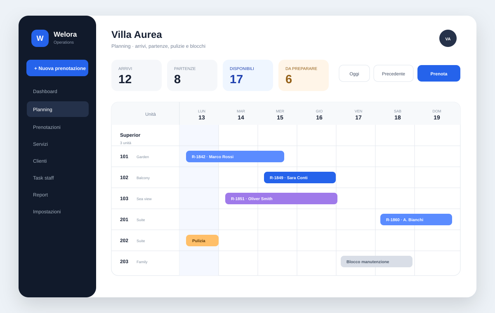
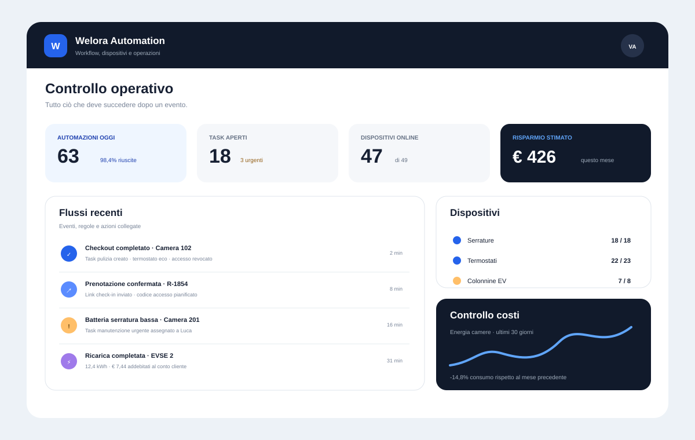
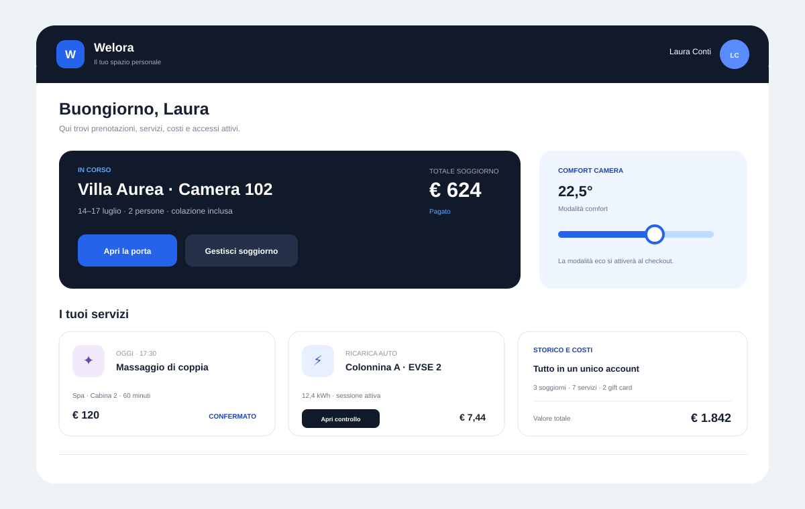

Il sito della struttura
Case, borghi ed esperienze in italiano, inglese e tedesco, con la prenotazione sempre a portata di mano.
Prenotazioni, canali, check-in online, pagamenti anche dal telefono, fatture, pulizie e cassa sugli stessi dati. Un solo sistema per hotel, B&B e affitti brevi.

Case vacanza, un bed & breakfast e servizi benessere: il sito della struttura vende con Welora, senza commissioni sulle prenotazioni dirette.
Case, borghi ed esperienze in italiano, inglese e tedesco, con la prenotazione sempre a portata di mano.

Disponibilità e prezzi aggiornati dal gestionale, età dei bambini e promozioni riservate.
Servizi prenotabili per fascia oraria, con durata, partecipanti e totale calcolati subito.
Il sito dell’Albergo Diffuso Socchieve è stato realizzato da Welora. Scopri il servizio siti web →
PMS, booking engine, pagamenti, adempimenti, fatture e automazioni vengono spesso venduti come prodotti o add-on separati.
La stessa prenotazione passa da portali, fogli, messaggi e strumenti diversi, aumentando errori e tempo perso.
Reception, servizi, pulizie, pagamenti, fiscalità e attività operative finiscono spesso in sistemi diversi che non condividono contesto.
Ogni strumento ha il suo abbonamento. Welora li riunisce in un solo canone, perché aggiungere una funzione non ci costa di più. Togli ciò che non usi e inserisci quanto paghi davvero.
Importi indicativi e modificabili. Welora: €29/mese + €10 per ogni canale OTA oltre il primo, IVA esclusa. Le commissioni dei provider esterni (pagamenti, verifica identità, OTA) sono escluse in entrambi i casi.
Vedi i prezziWelora non si ferma alla camera: collega soggiorni, servizi, vendite, incassi e attività operative mantenendo gli stessi clienti, conti e regole.
Hotel, residence, B&B e altre strutture ricettive condividono planning, disponibilità, clienti, conti, pagamenti e operatività.

Tutte le funzioni fanno parte del prodotto: niente moduli da sbloccare, niente piani superiori. Paghi in più solo ciò che ha un costo reale, come i canali OTA oltre il primo.
Soggiorni, camere, unità, disponibilità, tariffe, restrizioni, note e operatività quotidiana.
PMS · planning · disponibilità · tariffeVendita diretta dal tuo sito senza commissione Welora e oltre 100 canali OTA sullo stesso inventario: prenotazioni, modifiche e cancellazioni entrano da sole.
Booking diretto · OTA · sincronizzazioneDati degli occupanti e verifica d’identità prima dell’arrivo, schedine Alloggiati Web, statistiche turistiche e tassa di soggiorno preparate dagli stessi dati.
Portale ospite · identità · Alloggiati · statisticheCaparre e saldi online, preautorizzazioni, carta a garanzia con penale di mancata presentazione, rimborsi e Tap to Pay sullo smartphone, collegati ai conti Welora.
Caparre · garanzie · rimborsi · Tap to PayGestisci servizi, trattamenti, prodotti, transfer, parcheggi, noleggi ed esperienze anche senza collegarli a una camera.
Servizi · trattamenti · extra · vendite autonomeDocumenti commerciali, flussi fiscali e fatturazione elettronica integrati; senza registratore fisico quando la modalità adottata e la normativa lo consentono.
Documenti · corrispettivi · FatturaPAEventi e regole collegano task, reparti, pulizie, messaggi email e WhatsApp dal numero della struttura, accessi, pagamenti e sistemi esterni con tracciamento.
Task · housekeeping · WhatsApp · automazioniGestisci più strutture, utenti, ruoli e servizi mantenendo dati separati per sede e una visione centrale quando serve.
Multi-sede · ruoli · report · auditReception, pulizie, cassa, migrazione dati e dispositivi lavorano sugli stessi dati di prenotazioni e conti.
Importa da CSV o Excel contatti, prenotazioni attive e storiche, gruppi, camere, tariffe, prezzi per occupazione e bambini, saldi aperti. Anteprima correggibile riga per riga e conferma tutto-o-niente.
Import guidato · storico · saldiUna coda di priorità per il turno: partenze scadute, arrivi, variazioni da verificare, messaggi in attesa. Checkout guidato, registro chiavi, orari concordati, consegne di turno e oggetti smarriti.
Priorità · checkout · chiavi · turniRegole automatiche per riassetto, pulizie intermedie e biancheria, ricalcolate quando cambiano date o camere. L'addetto vede sul telefono solo le sue camere, con checklist, blocchi e note alla reception.
Regole · addetti dal telefono · stato camereCasse con apertura e chiusura turno, incassi misti e rimborsi, scadenziario, prima nota in partita doppia con scritture automatiche ed export per il commercialista.
Casse · prima nota · commercialistaTermostati dalla dashboard, avvisi se una camera non raggiunge la temperatura di comfort, serrature e dispositivi associati alle camere e attivati dagli eventi del soggiorno.
Termostati · serrature · automazioniTrattamenti, esperienze e appuntamenti con professionisti, competenze, turni, assenze, cabine e risorse, buffer e controllo delle sovrapposizioni. Soggiorni e appuntamenti nello stesso sistema.
Agenda · professionisti · risorseRevenue Management, analisi alberghiera, vendita diretta, fidelizzazione e magazzino lavorano con i dati del gestionale.
Regole e suggerimenti per ottimizzare le tariffe e gestire la redditività mantenendo il controllo sulle decisioni.
RMS · strategie tariffarieTariffe adattabili alla domanda, alla stagionalità, all'occupazione e ai dati di mercato disponibili.
Domanda · mercato · tariffeIndicatori chiari per confrontare periodi, andamento delle camere e risultati della struttura.
ADR · RevPAR · occupazioneProposte con scadenza, verifica della disponibilità e conversione in prenotazioni.
Offerte · scadenze · conversioneUn canale in più per portare gli ospiti verso la prenotazione diretta attraverso le integrazioni abilitate.
Visibilità · prenotazioni diretteRichieste di recensione dopo il soggiorno e gestione della reputazione della struttura.
Feedback · recensioniSegmentazione degli ospiti, campagne, offerte mirate e comunicazioni nel rispetto dei consensi.
CRM · campagne · ospiti abitualiProdotti, giacenze, movimenti e soglie di riordino collegati all'operatività e alle vendite.
Inventario · scorte · riordiniCollega clima, illuminazione e scenari della struttura agli eventi del soggiorno tramite impianti KNX compatibili.
KNX · comfort · automazioni* Google Hotel Ads e metasearch possono prevedere condizioni e costi dei canali o dei partner. Per KNX sono necessari impianto e interfacce compatibili, da verificare in base al progetto.
Un sito curato, responsive e pensato per ricevere contatti e prenotazioni dirette. Un servizio professionale su preventivo, distinto dal canone Welora.
Scopri il servizio siti webUn operatore digitale che risponde agli ospiti con disponibilità, prezzi e regole reali di Welora, prepara proposte e passa la conversazione a una persona quando serve. Non è incluso nel canone Base: prezzo comunicato prima dell'attivazione.
Una struttura ricettiva spesso vende molto più di un pernottamento. Welora gestisce servizi e beni con conti indipendenti, clienti passanti, aziende ed eventi, usando gli stessi pagamenti e flussi fiscali.
Le regole collegano prenotazioni, staff, messaggi, adempimenti, pagamenti e dispositivi. Il lavoro ripetitivo diventa un flusso tracciato, con retry e gestione degli errori.

Welora collega il soggiorno agli impianti: quando l’ospite prenota, arriva o parte, camere, accessi e consumi si regolano di conseguenza. Per progettare e installare l’impianto ti affianca JDevPro, l’azienda che sviluppa Welora.
Su jdevpro.it trovi tutte le soluzioni per domotica, automazione avanzata e integrazione di impianti e software.
Scopri le soluzioni JDevProDati, pagamento, documenti, accessi e task partono dalla stessa prenotazione.
Apri un conto, incassa e genera il documento previsto senza creare una prenotazione fittizia.

Ruoli e operatività restano separati per sede, con una visione centrale quando serve.
Welora Base costa €29/mese + IVA. Non ci sono moduli da sbloccare né piani superiori: paghi in più solo ciò che ha un costo reale anche per noi, indicato prima.
Per strutture che vogliono sostituire più strumenti con un unico sistema operativo, dalla singola sede ai gruppi più articolati.
Paghi in più solo ciò che ha un costo anche per noi o per un provider esterno.
* Welora Base include il collegamento a 1 canale OTA; ogni canale aggiuntivo costa €10/mese + IVA. Le commissioni delle OTA restano a carico della struttura. Possono inoltre applicarsi costi a consumo o commissioni del provider per verifica identità/check-in, pagamenti e Tap to Pay, servizi fiscali e altri servizi terzi. Il check-in digitale non sostituisce gli obblighi di identificazione previsti dalla normativa: la verifica dell’ospite deve essere svolta con la modalità richiesta nel caso concreto. L’uso senza registratore telematico fisico dipende dalla soluzione fiscale adottata e dai requisiti normativi applicabili.
Prezzo, funzioni e tempi: le risposte rapide.
Per strutture ricettive di ogni dimensione: B&B, affittacamere, appartamenti e affitti brevi, residence, hotel con più reparti e gruppi multi-sede. Le funzioni sono le stesse per tutti.
PMS e planning, prenotazione diretta, 1 canale OTA incluso (ogni canale aggiuntivo €10/mese + IVA), portale ospite, check-in digitale, pagamenti, servizi e vendite autonome, fiscalità integrata, automazioni, ruoli e gestione multi-sede. Il prezzo può scalare con capacità e volumi, non con lo sblocco delle funzioni essenziali.
Sì, con smartphone e provider compatibili tramite Tap to Pay. Non serve un lettore separato nei casi supportati; restano applicabili le commissioni e i requisiti del provider.
Welora automatizza raccolta dati e documenti, passaggi di verifica, preparazione degli adempimenti e ricevute dove supportato. L'identificazione dell'ospite deve comunque rispettare gli obblighi applicabili; il provider di verifica può prevedere un costo per check-in.
Sì. I conti generici permettono di gestire passanti, clienti, aziende, eventi, servizi ed extra con incassi e documenti propri.
Sì. La piattaforma è multi-struttura: sedi, utenti, ruoli e dati possono essere gestiti separatamente, mantenendo una visione centrale. Le condizioni per i gruppi multi-sede vengono definite insieme prima della sottoscrizione.
Perché aggiungere una funzione non ci costa di più. Facciamo pagare il canone base e solo ciò che ha un costo reale, come i canali OTA oltre il primo o i servizi dei provider esterni, sempre indicati prima.
Sì. L'importazione guidata da CSV o Excel porta in Welora contatti, prenotazioni attive e storiche, gruppi, camere, tariffe, prezzi e saldi aperti, con anteprima e correzioni prima della conferma.
Welora integra documenti commerciali, corrispettivi e fatturazione elettronica. L'assenza di un registratore telematico fisico è possibile soltanto quando la soluzione fiscale adottata e la normativa applicabile lo consentono; eventuali costi del provider fiscale restano separati.
No. È un servizio futuro separato, pensato per usare i dati reali di Welora nelle conversazioni e nei flussi autorizzati. Prezzo e data di disponibilità saranno comunicati prima dell'attivazione.
Sì. Booking.com, Airbnb, Expedia e oltre 100 portali si collegano allo stesso inventario del booking diretto: prenotazioni, modifiche e cancellazioni entrano nel gestionale, disponibilità e prezzi partono verso i canali. Un canale è incluso, gli altri costano €10/mese ciascuno.
Sì. Welora salva la carta a garanzia con il consenso dell’ospite e, se l’ospite non si presenta, permette di addebitare la penale prevista dalle condizioni di prenotazione. Caparre e saldi possono essere incassati online.*
Sì. I dati raccolti con il check-in online diventano schedine Alloggiati Web, statistiche turistiche e calcolo della tassa di soggiorno con le regole del tuo Comune, da controllare e approvare prima dell’invio.
Il lancio commerciale è il 15 febbraio 2027. Puoi richiedere una demo già oggi e preparare con noi il passaggio dal gestionale attuale.
Un prodotto italiano, costruito attorno agli adempimenti, alla fiscalità e al lavoro quotidiano delle strutture italiane. Parli direttamente con chi lo sviluppa.
Esportazione dei dati sempre inclusa nel canone, insieme a backup, aggiornamenti, ruoli e audit.
Quello che vendi dal tuo sito resta alla struttura: Welora non trattiene percentuali sulle prenotazioni dirette.
Import dei dati, configurazione dei canali e primi passi li facciamo insieme.
Ti mostriamo Welora con i tuoi flussi reali e prepariamo insieme il passaggio: dati, camere, tariffe e canali.
Vuoi capire se Welora si adatta alla tua struttura, ai servizi che vendi o ai flussi che vuoi automatizzare? Scrivici: parli direttamente con chi sviluppa Welora.
Per demo, prezzi e valutazione dei flussi della struttura.
Per richieste di supporto sul sito e comunicazioni relative alla privacy.
Lancio il 15 febbraio 2027. Condizioni definitive confermate prima della sottoscrizione.